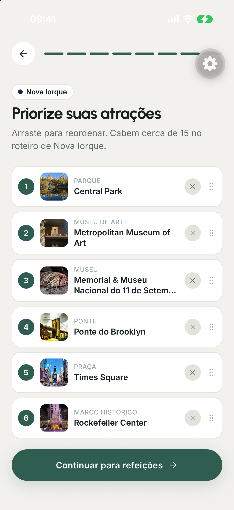
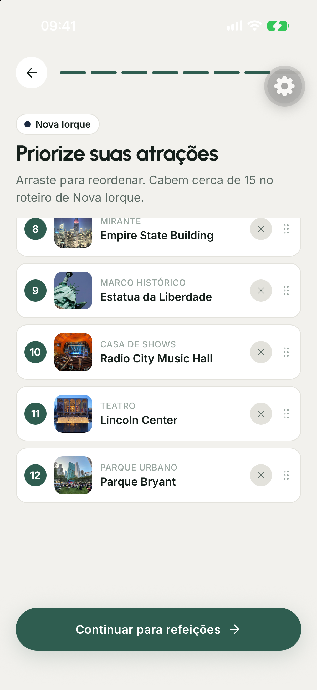

PCV
Em que ordem visitar todos os pontos?
Um percurso de menor custoAplicativo móvel para geração de roteiros turísticos com otimização em grafos e modelos de linguagem
Olá. Nós somos Gustavo Takechi e Bruno Medeiros, e vamos apresentar o Interlude, um aplicativo móvel para planejar e editar roteiros turísticos.
A ideia surgiu quando planejamos uma viagem de três dias a Nova Iorque. Tínhamos vários lugares que queríamos conhecer, mas precisávamos descobrir o que cabia naquele período, considerando horários de funcionamento e deslocamentos. Cada mudança na lista exigia rever a agenda.
Foi dessa dificuldade que veio a proposta: reunir a pesquisa dos lugares e a organização das visitas em um aplicativo, mantendo as prioridades do viajante. Para mostrar como isso funciona, vamos acompanhar uma execução registrada de cinco dias em Nova Iorque, diferente da viagem que motivou o trabalho.
A viagem que motivou o projeto tinha três dias. O exemplo computacional da apresentação tem cinco dias. As duas situações são distintas.
Ao planejar três dias em Nova Iorque, precisamos pesquisar horários, escolher prioridades e rever a agenda para acomodar as visitas.
O ponto de partida é este mapa: doze atrações que queremos visitar e a hospedagem. Saber onde ficam esses lugares ajuda, mas ainda precisamos decidir em que dia visitar cada um e se teremos tempo de chegar antes do fechamento.
O viajante informa o período, os interesses e a disponibilidade. Depois escolhe as atrações e coloca suas preferências em ordem. O sistema reúne os horários e os tempos estimados para distribuir essas visitas entre os dias.
Quando o mapa muda para o resultado, as cores passam a representar os dias e as linhas mostram a sequência das visitas. Essa divisão foi produzida pelo sistema. Se algum lugar não couber, ele aparece separadamente para que o viajante saiba o que ficou de fora.
Os mapas usam as coordenadas das atrações selecionadas. A divisão em dias é a resposta registrada do solver.
As experiências dos autores no planejamento de viagens e a vivência profissional no setor orientaram as necessidades do aplicativo.
O app informa quando está processando, pede permissão para exportar e preserva a viagem salva se um ajuste falhar.
Um ajuste incompatível preserva a viagem salva. Ao replanejar, o viajante examina mudanças e exclusões antes de aplicar a proposta.
O viajante define a ordem das cidades e informa os horários estimados de chegada e partida.
Transformamos essa necessidade em um fluxo de uso. A pessoa prepara a viagem, descobre atrações, escolhe suas prioridades e gera uma agenda. Depois precisa conseguir consultar esse roteiro no celular e alterá-lo sem perder o que já salvou.
Um exemplo é mover uma atração para outro dia. A mudança pode entrar em conflito com o horário de funcionamento ou com outra visita. Nesse caso, o aplicativo mantém a agenda salva. Se for necessário reorganizar o dia, ele apresenta uma proposta com as mudanças para a pessoa decidir se quer aplicá-la.
Também delimitamos o que o sistema decide: ele organiza as visitas dentro dos destinos. A ordem das cidades e os horários estimados de chegada e partida continuam sendo informados pelo viajante.
A prévia de mudanças pertence ao replanejamento de atrações. Alterar datas dispara uma nova geração ao salvar. O fluxo atende ao planejamento dentro dos destinos; não escolhe a ordem das cidades.
O roteiro exige ordenar as visitas, distribuí-las entre os dias e respeitar horários. Se faltar tempo, também é preciso escolher o que fica de fora.
Em que ordem visitar todos os pontos?
Um percurso de menor custoComo repartir os pontos entre vários percursos?
No app, cada percurso pode ser um diaComo respeitar também os horários de visita?
Arco âmbar: janela de horário de cada pontoO OP escolhe quais pontos visitar dentro de um limite de tempo. O TOPTW combina essa seleção com vários percursos e janelas.
Tracejado: ponto deixado de foraInterludeseleção próxima ao TOPTW, implementada com roteamento, visitas opcionais e penalidades no OR-Tools.
Para formular esse problema, começamos pela ordem de visita. O Problema do Caixeiro Viajante procura um percurso de menor custo que passe por todos os pontos. Isso ajuda a pensar na sequência, mas uma viagem tem vários dias.
O problema de roteamento de veículos permite dividir os pontos entre percursos. Na nossa adaptação, cada percurso representa um dia. Quando acrescentamos janelas de tempo, também exigimos que cada visita ocorra em um horário permitido.
Ainda falta uma decisão: quando o tempo é insuficiente, quais lugares devemos deixar de fora? Os problemas de orientação, como OP e TOPTW, tratam dessa seleção. O Interlude combina essas ideias no OR-Tools: as visitas são opcionais, e o custo de excluí-las depende das preferências do viajante.
A sequência de modelos organiza a explicação das decisões, sem representar uma cronologia. A função objetivo implementada difere da formulação clássica do TOPTW.
Essa solução foi dividida em componentes com responsabilidades diferentes. O aplicativo móvel apresenta as telas e guarda as escolhas do viajante. O backend recebe a solicitação e reúne os dados necessários para gerar o roteiro.
É o backend que consulta os lugares, obtém estimativas do modelo de linguagem e prepara os tempos de deslocamento. Antes de consultar novamente um serviço externo, ele procura dados válidos no cache.
Com essa preparação concluída, o solver recebe uma entrada numérica: paradas, durações, horários e matrizes de deslocamento. Ele calcula as rotas e devolve o resultado ao aplicativo. Por estar separado, podemos testá-lo com uma entrada salva, sem repetir as consultas externas.
A autenticação e os dados persistidos ficam no Firebase. O caminho de baixo mostra que o próprio aplicativo salva e sincroniza as viagens no Firestore, sujeito às regras de acesso do usuário.
O Redis pode ser contornado em caso de falha: o adaptador consulta a origem. O solver não consulta provedores externos; recebe os dados preparados pelo backend.
Aqui mostramos o que é guardado quando uma viagem é salva. O elemento central é o TripDraft, que representa a viagem e fica em um documento do Firestore, no caminho trips seguido do identificador da viagem.
Dentro desse registro ficam os destinos, o roteiro gerado e o progresso das visitas. O roteiro contém uma lista de dias. Cada dia contém as paradas, com a ordem e os horários de chegada e saída, além dos deslocamentos entre elas. Por exemplo: para recuperar a hora de uma visita, seguimos a viagem, o roteiro, o dia e a parada.
As linhas contínuas mostram essa relação de conteúdo: esses dados são salvos como partes da própria viagem. Já a linha tracejada liga a viagem ao usuário pelo campo ownerId. Ela guarda o identificador do proprietário; o perfil do usuário fica em seu próprio registro. Assim, o mesmo usuário pode ter várias viagens salvas.
TripDraft é salvo em trips/{id}. legs, itinerary e liveProgress são campos desse documento. itinerary contém days; cada dia contém steps e legs de deslocamento. ownerId relaciona a viagem ao proprietário. O cache de respostas externas é separado dos dados da viagem.
Sete etapas: três dependem do viajante, três são resolvidas pelo sistema e a última devolve o roteiro ao aplicativo.
destino, período, hospedagem, ritmo e meio de transporte
busca por categoria, filtro de não atrações e ordenação por escore
seleção das atrações e ordem definida pelo usuário
horários, durações e matriz de deslocamentos
limites de visitas, horários e custos de exclusão
inserção mais barata em paralelo e busca local guiada
roteiro persistido no Firestore, exibido em mapa e agenda
Agora podemos acompanhar o caminho entre preencher a viagem e receber a agenda. Nas primeiras etapas, o viajante define o destino e o período, encontra atrações e escolhe suas prioridades.
Essas escolhas chegam ao backend, que reúne horários, durações e deslocamentos. Com os dados preparados, montamos as restrições do problema e executamos a busca. A última etapa transforma a solução em uma agenda que pode ser consultada e salva no aplicativo.
Vamos percorrer esse fluxo com os dados de Nova Iorque. Primeiro, as escolhas feitas na tela; depois, como elas se tornam uma entrada para o solver.
A preparação da instância ocorre no backend. A resolução ocorre no serviço Python com OR-Tools. A persistência da viagem é feita pelo aplicativo.
O usuário informa destino, período, hospedagem e ritmo. O aplicativo guarda as escolhas em um TripDraft, e cada campo vira um parâmetro ou uma restrição do problema.
"startDate": "2026-09-14"
"endDate": "2026-09-18""lodgings": "Wyndham New Yorker""checkInTime": "14:00""pace": "moderate""travelMode": "transit"
"travelModeSelection": "suggested"Nesta execução, a viagem foi definida de 14 a 18 de setembro, com cinco dias e hospedagem no Wyndham New Yorker. Esses campos têm um efeito direto no modelo: os cinco dias viram cinco rotas, e a hospedagem é usada como início e fim de cada uma.
O ritmo moderado estabelece o teto de quatro atrações por dia. O meio de transporte define quais tempos de deslocamento entram na matriz. Aqui usamos transporte público, sugerido pelo aplicativo e aceito pelo usuário.
O horário informado para a chegada foi catorze horas. Na entrada registrada, as atrações do primeiro dia só podem começar a partir desse horário. Mas identificamos uma diferença importante: a base ainda permite sair antes da chegada. Vou retomar esse problema ao analisar a agenda, porque limitar a primeira visita não basta para representar toda a logística corretamente.
A base temporal da instância é 06:00. As atrações do primeiro dia começam a partir de 28.800 s, mas a base tem janela de 0 a 61.200 s. A rota registrada sai às 09:00. O check-out informado ocorre em 19/09, depois do último dia do roteiro.
Os interesses ativam buscas por tipo de lugar. Cada candidato volta com nota, volume de avaliações, tipo e posição. Três desses campos alimentam a ordenação do próximo slide.
{
"name": "Central Park",
"rating": 4.8, ri · nota média
"userRatingCount": 301915, ni · número de avaliações
"primaryType": "park", filtro de não atrações
"coordinate": { di · distância ao centro da busca
"latitude": 40.7825547, "longitude": -73.9655834 }
}
Com a viagem definida, o aplicativo busca lugares associados aos interesses escolhidos. O retorno inclui nome, posição, nota, quantidade de avaliações e tipos do lugar. O Central Park é um exemplo desse retorno.
Antes de ordenar as sugestões, aplicamos um filtro. Um resultado marcado como atração turística pode ser uma loja, um hotel ou outro estabelecimento que não corresponde ao passeio procurado. O filtro considera os tipos do lugar, os interesses explícitos e as exceções de atrações reconhecidas.
O resultado é uma lista de candidatos para o viajante examinar. A nota e o número de avaliações ajudam a ordenar essa lista, mas ainda precisamos tratar a diferença entre um lugar pouco avaliado e outro com milhares de avaliações.
O filtro considera tipos primários e secundários, interesses explícitos e exceções. A variante TCC apresenta os oito primeiros candidatos pelo escore global e depois intercala as categorias ativas com peso igual.
O escore combina a nota ajustada pelo volume de avaliações, a popularidade relativa e um desconto por distância.
Aproxima notas com poucas avaliações da referência 4,0. Com muitas avaliações, preserva a nota observada.
Usa o volume de avaliações como indicador de popularidade, em uma escala de 0 a 1 entre os candidatos.
Até o raio R, não há desconto no escore. Fora dele, cada duplicação da distância reduz o escore em 0,15.
Um lugar com nota cinco e uma única avaliação não oferece a mesma evidência que um lugar com nota quatro vírgula oito e milhares de avaliações. Por isso, o primeiro termo ajusta a nota usando uma média de referência. Quando há poucas avaliações, o valor fica mais próximo dessa referência; quando há muitas, fica próximo da nota observada.
É o que acontece no exemplo à direita: a nota cinco do lugar hipotético se aproxima de quatro, enquanto a do Central Park continua perto de quatro vírgula oito.
Depois acrescentamos um termo de popularidade baseado no volume de avaliações, comprimido por logaritmo. Por fim, descontamos a distância: dentro do raio de busca não há desconto; fora dele, cada duplicação da distância reduz o escore em zero vírgula quinze.
Esses pesos foram ajustados de forma exploratória. O próximo gráfico mostra como os critérios alteram a ordem das mesmas atrações.
O índice i identifica uma atração. Leia Bᵢ como “bê índice i”; os demais índices seguem a mesma regra. O logaritmo comprime diferenças grandes no número de avaliações.
Leia: “esse índice i é igual a bê índice i, mais zero vírgula seis vezes i maiúsculo índice i, menos zero vírgula quinze vezes gê índice i”. É a nota ajustada, acrescida da popularidade e descontada pela distância.
Leia: “n índice i vezes erre índice i, mais quinhentos vezes quatro, tudo dividido por n índice i mais quinhentos”. nᵢ é a quantidade de avaliações e rᵢ é a nota observada. Os 500 funcionam como peso da nota de referência 4,0. Com nᵢ = 1 e rᵢ = 5, o resultado é 2005/501 ≈ 4,002; com muitas avaliações, o ajuste é pequeno.
Leia uᵢ: “logaritmo na base dez de um mais n índice i”. Leia Iᵢ: “u índice i menos u mínimo, dividido por u máximo menos u mínimo”. Os extremos são os valores entre os candidatos. Isso leva a popularidade para a faixa de zero a um; se os extremos forem iguais, o código usa zero e evita divisão por zero.
Leia: “logaritmo na base dois do maior valor entre um e d índice i dividido por erre”. dᵢ é a distância até a referência da busca; R é o raio. Se dᵢ ≤ R, Gᵢ = 0. Em 2R, Gᵢ = 1, então o escore perde 0,15; em 4R, perde 0,30.
A média de referência é 4,0, com peso de 500 avaliações. A popularidade relativa usa logaritmo e normalização entre os candidatos; se os extremos forem iguais, Iᵢ = 0. Os pesos 0,6 e 0,15 são ajustes exploratórios, sem estudo que os estabeleça como ideais.
As mesmas doze atrações em três ordenações. Em destaque, quem mudou de posição.
Aqui mantivemos as mesmas doze atrações e comparamos três critérios. Na primeira coluna, multiplicamos nota pelo número de avaliações. Como as notas são muito próximas, o volume de avaliações praticamente determina a ordem.
Na coluna do meio usamos a média bayesiana. Como estes lugares já têm muitas avaliações, os resultados ficam muito próximos de quatro vírgula sete ou quatro vírgula oito. O ajuste é mais relevante para os candidatos com poucas avaliações, que não estão nesta seleção final.
Na última coluna, acrescentamos a popularidade relativa. O Metropolitan sobe da sétima para a quarta posição, enquanto o Empire State cai da quarta para a sétima. As cores destacam a mudança entre a primeira e a última coluna.
Neste conjunto, todas as atrações estão dentro do raio de busca, então o desconto por distância é zero. Essa comparação explica o comportamento da ordenação; a decisão final sobre quais lugares visitar continua com o viajante.
O produto simples é nota vezes número de avaliações. A média bayesiana e o escore completo usam as fórmulas do slide anterior. Neste conjunto, todas as atrações estão dentro do raio, então o termo de distância vale zero. Posição no gráfico é uma ordenação, não o valor do escore.
O produto simples é uma referência de comparação. O desconto por distância é zero nas doze atrações exibidas. Azul indica subida, âmbar indica descida e cinza indica a mesma posição entre a primeira e a última coluna.


O usuário escolhe as atrações e define a ordem arrastando a lista. Nesta execução, 12 atrações. A posição entra no solver como peso no custo de deixar a atração de fora.
Depois de examinar as sugestões, o viajante escolhe as atrações e arrasta a lista para indicar suas prioridades. Aqui foram selecionadas doze.
Estar em primeiro nessa lista significa que aquele lugar é mais importante para a pessoa. Isso aumenta o custo de deixá-lo de fora se faltar tempo. A lista não obriga o roteiro a visitar os pontos nessa mesma sequência: os horários e os deslocamentos ainda precisam ser respeitados.
Dessa forma, conseguimos separar duas decisões. O usuário diz o que prefere preservar, e o solver procura em que dia e em que ordem encaixar cada visita. A fórmula seguinte mostra como essa preferência entra no cálculo.
Leia: “um mais quatro vezes rô índice i”. ρᵢ = (N − ordem)/N: “ene menos a ordem, dividido por ene”. N é a quantidade de atrações e a ordem começa em zero. Com 12 atrações, a primeira recebe fator 5; a última recebe 1 + 4/12, aproximadamente 1,33. O fator aumenta o custo de exclusão, sem fixar a sequência das visitas.
A prioridade altera o custo de exclusão. Ela não fixa a ordem cronológica das visitas nem garante a inclusão de uma atração quando suas janelas são incompatíveis.
Excluir uma atração acrescenta uma penalidade ao objetivo. O valor combina a prioridade do viajante, a popularidade e a época da viagem.
5.000.000Valor alto para favorecer a inclusão. Atrações continuam opcionais, sujeitas às janelas e ao custo total.
ρ = (N − ordem)/NO fator vai de 5 no primeiro a 1 + 4/N no último.
ι = mín(1, log₁₀(1+n)/5)Fator entre 1 e 1,5. Pode inverter custos entre posições próximas; não é apenas desempate.
σ ∈ {0,6; 1}Com σ = 0,6 o fator é 0,8: redução de 20%. Nesta execução, σ = 1 para todas.
Esta é a penalidade cobrada quando uma atração fica de fora. Ela faz parte da função de custo do solver; não representa um preço pago pelo usuário.
Partimos de cinco milhões e ajustamos esse valor pela posição na lista, pela popularidade do lugar e pela adequação à época da viagem. A posição tem a maior amplitude de peso. A popularidade também influencia e pode inverter o custo entre atrações próximas na lista.
Neste exemplo, todas as atrações têm adequação sazonal igual a um. Portanto, esse fator não muda a comparação. Atividades de dia inteiro recebem um custo de exclusão próprio, mais elevado.
Nos cinco dias de Nova Iorque, as doze atrações couberam. O efeito dessa penalidade aparece quando falta tempo: o solver compara o custo de excluir cada lugar com os demais custos da agenda, sempre respeitando as restrições obrigatórias.
Leia: “pi índice i é a parte inteira de cinco milhões, vezes um mais quatro rô índice i, vezes um mais meio iota índice i, vezes meio mais meio sigma índice i”. Os colchetes com piso ⌊ ⌋ mandam arredondar para baixo. πᵢ é um custo do objetivo, sem unidade monetária.
Leia: “rô índice i é ene menos a ordem, dividido por ene”. N é o total de atrações; ordem começa em zero. O primeiro fator vai de 5 até 1 + 4/N. Quanto mais alta a prioridade do viajante, mais caro excluir.
Leia: “iota índice i é o menor valor entre um e o logaritmo na base dez de um mais ene, dividido por cinco”. n é a quantidade de avaliações. ιᵢ fica entre zero e um e produz fator entre 1 e 1,5. Aqui há uma escala fixa; não é a normalização relativa da descoberta.
Leia: “sigma índice i pertence ao conjunto zero vírgula seis e um”. O fator 0,5 + 0,5σᵢ vale 0,8 quando σᵢ = 0,6 e vale 1 quando σᵢ = 1. Assim, uma atração menos adequada à época custa 20% menos para excluir. Nesta entrada, todas usam 1.
Para a primeira atração, com ρ = 1, ι = 1 e σ = 1: 5.000.000 × 5 × 1,5 × 1 = 37.500.000 unidades. Atrações de dia inteiro usam regra própria: penalidade fixa de dois bilhões.
A posição usa ρ = (N − ordem)/N, com ordem começando em zero. A importância turística da exclusão usa escala fixa, diferente da normalização entre candidatos da descoberta. Atividades de dia inteiro recebem penalidade fixa de dois bilhões. A resposta original de cinco dias tem unassigned vazio.
O backend traduz as escolhas em números: janelas de horário, durações e tempos de deslocamento.
Para montar a entrada do solver, o backend reúne os horários de funcionamento, as durações estimadas e os tempos de deslocamento. A grade à esquerda mostra quando cada visita pode começar em cada dia.
O fim da janela já desconta a duração da visita. Por exemplo, se um lugar fecha às dezessete horas e a visita dura duas horas, o início precisa ocorrer até as quinze. Assim, respeitar a janela também permite concluir a visita antes do fechamento.
À direita está a matriz de tempos por transporte público. Cada linha é uma origem e cada coluna é um destino. São treze posições distintas: a hospedagem e as doze atrações.
A instância completa tem cinquenta e dois nós porque inclui trinta e nove alternativas de almoço, distribuídas entre três dias. Essas alternativas ficam nas mesmas posições do hotel e das atrações. Por isso ampliam as escolhas do solver sem criar novas coordenadas para consultar na matriz.
Cada intervalo à esquerda indica os inícios possíveis de uma visita. A extremidade final já desconta a duração: fechar às 17h com visita de 2h permite iniciar até 15h. Na matriz à direita, escolha a linha da origem e a coluna do destino; a célula é o tempo em minutos. O valor de ida pode ser diferente do de volta. Treze posições geram 13 × 13 = 169 pares origem–destino.
Há três grupos de treze alternativas de almoço, nos dias 2, 3 e 4, nas mesmas coordenadas da hospedagem e das atrações. A matriz de treze posições é expandida no payload de cinquenta e dois nós. A base continua disponível antes das 14:00 no primeiro dia.
O modelo escolhe quais paradas visitar, em que dia e em qual sequência. Cada dia corresponde a um veículo no OR-Tools.
Teto rígido no ritmo moderado. Piso suave de 2, cobrado só em dias com visita.
Com os dados preparados, o modelo precisa decidir quais paradas visitar, em que dia e em qual sequência. Cada dia é representado por um veículo que sai de uma base e retorna a uma base.
Na notação, x indica um deslocamento usado, z indica que o ponto foi visitado naquele dia, y indica que ele ficou de fora e T registra o horário de início. A primeira condição diz que um ponto opcional é visitado uma vez ou excluído. A seguinte liga a visita à entrada e à saída daquele ponto na rota.
O teto de quatro atrações por dia é obrigatório neste ritmo. Já o mínimo de duas é uma preferência com penalidade, aplicada aos dias que têm visitas.
Por fim, minimizamos a soma dos deslocamentos e das penalidades. Isso permite escolher entre agendas que respeitam as restrições. O valor do objetivo compara essas soluções, mas não mede diretamente a satisfação do viajante.
d identifica o dia; i e j identificam pontos. D é o conjunto dos dias; U reúne os pontos opcionais, incluindo refeições; Vₐ é o subconjunto das atrações. o_d e f_d são as bases de saída e retorno. ∈ lê-se “pertence”; ⊆, “é subconjunto”; ∑, “somatório”. Os símbolos sobrescritos d indicam dia, não potência.
xᵈᵢⱼ lê-se “xis de i para j no dia d”: vale 1 se aquele deslocamento é usado. zᵈᵢ lê-se “zê do ponto i no dia d”: vale 1 se há visita. yᵢ lê-se “ípsilon índice i”: vale 1 se o ponto é excluído. {0,1} indica variável binária. Tᵈᵢ lê-se “tê do ponto i no dia d”: início do atendimento, em segundos desde as 06h. T ≥ 0 lê-se “tê maior ou igual a zero”.
Leia: “a soma de zê do ponto i sobre todos os dias, mais ípsilon índice i, é igual a um”. Para cada ponto opcional, ou uma visita ocorre em um dia ou ele é excluído. Isso impede visitar o mesmo ponto em dois dias.
Leia: “a soma dos arcos que entram em i é igual à soma dos arcos que saem de i, e ambas são iguais a zê do ponto i naquele dia”. Se o ponto é visitado, há uma entrada e uma saída; se não é, ambas são zero. A expressão resume a conservação de fluxo.
Leia: “a soma das atrações visitadas no dia d é menor ou igual a quatro”. É um limite rígido para o ritmo moderado deste exemplo. Refeições não são atrações e não entram nessa contagem. O mínimo de duas atrações é suave, cobrado apenas em dias com visita.
Leia: “minimizar a soma dos tempos dos deslocamentos utilizados, mais a soma das penalidades das atrações excluídas, mais fi”. tᵢⱼ é o tempo entre i e j; x seleciona os deslocamentos. πᵢ é a penalidade de excluir i; y seleciona exclusões. Φ, letra grega fi, reúne os demais custos: duração do dia, limites suaves, preferências de horário e refeições omitidas. O valor total é uma pontuação de custo, não dinheiro nem uma duração pura.
O teto usa SetMax. O piso usa SetCumulVarSoftLowerBound com custo de vinte milhões por visita faltante, sem cobrança em rotas vazias. As bases de saída e retorno têm índices distintos no modelo, mesmo quando representam a mesma hospedagem.
A próxima visita começa depois que a anterior termina e o deslocamento é concluído. Exemplo: Catedral de São Patrício → Metropolitan, no dia 2.
O fechamento semanal retira aquele dia das opções de visita da atração.
Iniciar após a faixa recomendada custa 500 unidades/s na preferência forte e 20 na suave. Antecipação não gera penalidade.
61.200 s por dia nesta execução, com origem às 06:00. A chegada 28.800 s equivale a 14:00.
O relógio é propagado ao longo da rota. A próxima visita só pode começar depois que a anterior terminar e depois de concluído o deslocamento.
No exemplo do segundo dia, a visita à Catedral de São Patrício dura trinta minutos. Somamos o transporte até o Metropolitan. Se chegarmos antes da janela de atendimento do museu, precisamos esperar. É por isso que a desigualdade permite que o próximo início seja maior que a soma, e não exige igualdade.
Além desse encadeamento, cada atração tem dias permitidos e horários de início. As preferências acrescentam um custo quando a visita começa depois da faixa recomendada, mas não proíbem esse atraso.
Os horários do cálculo usam seis da manhã como origem. Assim, vinte e oito mil e oitocentos segundos correspondem a catorze horas. Essa conversão será a mesma usada para exibir a agenda no aplicativo.
Leia: “se o arco de i para j é usado no dia d, então o início em j é maior ou igual ao início em i, mais a duração da visita em i, mais o deslocamento de i para j”. A seta ⇒ lê-se “implica”. Os T da figura se referem ao mesmo dia, por isso o sobrescrito d foi omitido. sᵢ é o tempo de serviço, ou visita; tᵢⱼ é o deslocamento.
A igualdade bastaria se a visita seguinte pudesse começar assim que a pessoa chega. O sinal ≥ admite espera, por exemplo até a abertura do museu. O modelo não permite iniciar a visita seguinte antes de terminar a anterior e o transporte.
Todos os valores numéricos estão em segundos desde as 06h. Some o início na Catedral, os 1.800 segundos de visita e o transporte. Se a soma for menor que 14.400 segundos, o Metropolitan ainda exige espera até as 10h. A diferença entre 14.400 e essa soma é a espera mostrada no gráfico.
61.200 segundos equivalem a 17 horas: das 06h às 23h. 28.800 segundos equivalem a 8 horas após as 06h, portanto 14h. A preferência de horário é suave: atraso após o fim da faixa custa 500 ou 20 unidades por segundo conforme a força. Ela é diferente da janela obrigatória de funcionamento.
O tempo de trânsito soma serviço e deslocamento. A espera é permitida pela dimensão de tempo. O atraso na preferência custa 500 unidades por segundo quando forte e 20 quando suave; não há custo simétrico por antecipação.
O solver constrói uma agenda inicial, tenta melhorá-la e devolve a melhor solução encontrada dentro do prazo.
Insere cada parada na posição que acrescenta menos custo, entre os encaixes permitidos pelos horários.
Parallel Cheapest InsertionTroca a ordem das paradas e sua distribuição entre os dias para tentar reduzir deslocamentos e penalidades.
Guided Local Search (GLS)Ao terminar o prazo, entrega a melhor solução encontrada. Não há prova de que ela seja a solução ótima.
Nesta execução: 12 atrações em 5 diasO limite cresce conforme a quantidade de pontos e de dias.
Tempo registrado nesta execução: 5,03 s, incluindo o processamento do solver.
Com a entrada pronta, o solver começa construindo uma agenda. Para cada parada, ele procura uma posição que respeite as restrições e acrescente pouco custo. Esse é o papel da inserção mais barata em paralelo.
A primeira agenda ainda pode ser melhorada. A busca local guiada testa mudanças na ordem das paradas e na distribuição entre os dias. Ela usa penalidades internas de busca para conseguir explorar outras combinações, além de uma melhoria imediata.
Esse processo tem um prazo. Aqui são cinquenta e dois nós e cinco dias: o indicador de tamanho resulta em sessenta e dois, então a busca recebe cinco segundos. As alternativas de almoço também contam nesses cinquenta e dois nós.
Ao final, devolvemos a melhor agenda encontrada. Nesta execução, as doze atrações foram incluídas em cinco dias. Isso não é uma prova de ótimo. A animação seguinte mostra as melhorias registradas em uma nova execução com essa mesma entrada.
Leia: “quantidade de nós mais duas vezes a quantidade de dias”. As barras | | indicam cardinalidade, isto é, número de elementos, e não valor absoluto neste contexto. Aqui V inclui 52 nós, inclusive alternativas de almoço; D contém 5 dias. Logo, 52 + 2 × 5 = 62, na faixa de busca de 5 segundos. Esse é um indicador prático do código, não uma medida formal da complexidade computacional.
Os limites padrão são 2, 5 e 15 segundos, conforme os limiares 30 e 70. O prazo restante da requisição pode reduzi-los. A tentativa alternativa usa AUTOMATIC por até 30 segundos, condicionada ao prazo restante e à ausência de solução na busca principal.
O solver encontra uma agenda e continua procurando combinações com menor custo. Cada quadro é a melhor solução completa observada até aquele instante.
Esta animação foi produzida com uma nova execução do solver usando a mesma entrada de Nova Iorque. Cada quadro corresponde a uma melhoria da melhor solução completa encontrada até aquele momento.
O número identifica a atração e a cor indica o dia. Conforme a ordem e a distribuição das visitas mudam, o custo diminui. No registro, ele passa de aproximadamente quarenta e um milhões para cento e cinquenta e quatro mil unidades.
As refeições continuam participando do cálculo, mas foram ocultadas no mapa para facilitar a leitura das atrações. Também desaceleramos a reprodução: o tempo real aparece no indicador.
Ao todo foram registradas quarenta e uma melhorias. Depois da última, a busca ainda continua até o prazo terminar. Isso ajuda a entender por que gastar mais tempo nem sempre produz uma agenda diferente.
São 41 melhorias registradas em uma nova execução local. O objetivo passa de 41.494.118 para 154.192. A animação omite os nós de refeição e não mostra todos os candidatos avaliados ou rejeitados. A proveniência e os resumos SHA-256 estão no JSON do registro.
12 de 12 atrações incluídas · 62,4 km de deslocamento no total
Nova Iorque · 14 a 18 de setembroComo ler: os números ligam cada ponto à visita na lista e indicam sua ordem no dia. Hospedagem. Linhas ligam as paradas; os trajetos reais seguem a malha de transporte.
Este é o roteiro devolvido para os cinco dias de Nova Iorque. As doze atrações foram incluídas, com sessenta e dois vírgula quatro quilômetros de deslocamento no total.
Cada coluna reúne o mapa e a agenda de um dia. Os números indicam a sequência das visitas naquele dia, e a lista abaixo traz o nome e o horário de cada uma. O quadrado marca a hospedagem. Os mapas usam a mesma escala, e as linhas mostram a ordem entre as paradas, não o desenho exato do transporte.
No segundo dia, por exemplo, a Catedral de São Patrício vem antes do Metropolitan e do Central Park, com uma pausa de almoço entre o museu e o parque. Já o terceiro dia concentra o maior deslocamento, por incluir a Estátua da Liberdade.
A resposta alimenta a agenda e o mapa do aplicativo e pode ser salva e editada. Há uma limitação visível no primeiro dia: a saída do hotel ocorre antes da chegada informada. Portanto, incluir todas as atrações não basta para garantir que a agenda inteira esteja correta.
Os horários, as distâncias e a sequência são os da resposta original de cinco dias. Cada mapa usa a mesma projeção e escala. A numeração recomeça em cada dia e representa a ordem de visita, não a prioridade. A saída da hospedagem antes da chegada informada é uma limitação conhecida da entrada e da implementação.
Mesma entrada de Nova Iorque: 12 atrações, 5 dias e 52 nós. Variam a construção inicial, a busca local e o limite de tempo.
| Configuração | Objetivo escala log | Atrações | |
|---|---|---|---|
| Arco mais barato, primeira solução | 96.495.574 | 10/12 | |
| Inserção paralela, primeira solução | 41.494.118 | 12/12 | |
| Inserção e descida gulosa | 155.336 | 12/12 | |
| Inserção e GLS, 2 a 600 smenor objetivo observado | 154.192 | 12/12 | |
| Inserção e simulated annealing, 60 s | 155.336 | 12/12 | |
| Inserção e busca tabu, 60 s | 155.336 | 12/12 |
tempo da descida gulosa, com objetivo 0,7% acima do menor observado.
a GLS devolveu o mesmo objetivo nos seis limites testados.
Nesta comparação, mantivemos as atrações, os horários, as matrizes e os pesos. Alteramos apenas a configuração da busca e o tempo disponível.
A primeira solução obtida pela inserção paralela já inclui as doze atrações, mas ainda tem um objetivo alto. Ao aplicar a busca local, esse valor cai bastante. Portanto, conseguir uma solução viável é uma etapa; melhorar sua organização exige continuar a busca.
A descida gulosa terminou em cerca de onze centésimos de segundo, com objetivo zero vírgula sete por cento acima do menor observado. A busca local guiada encontrou o mesmo objetivo de cento e cinquenta e quatro mil cento e noventa e dois em todos os limites testados, de dois a seiscentos segundos.
Para essa entrada, ampliar o tempo não trouxe uma melhora no objetivo. Esse resultado sugere comparar mais destinos antes de alterar o prazo usado em produção. Também não podemos interpretar a diferença percentual do custo como uma diferença de satisfação do viajante.
A GLS foi comparada com limites de 2, 5, 15, 60, 300 e 600 segundos. Os três menores tiveram três repetições. O registro reúne 17 execuções com cinco dias e quatro recortes. A reprodução confirmou objetivos e agendas; os tempos citados pertencem ao registro original. Não há limite inferior comprovado para calcular distância ao ótimo.
As verificações cobriram o solver, a geração integrada e a recuperação da viagem salva.
| O que foi verificado | Como foi verificado | Resultado registrado |
|---|---|---|
| Regras do solver | Oito verificações em cinco cenários controlados: distribuição, prioridades, passeios de dia inteiro, horários, refeições, início do dia e limites de busca. | 8 verificações aprovadasCondições esperadas atendidas nesses cenários. |
| Geração integrada | Execuções em Nova Iorque, Brasília e Pirenópolis, reunindo preparação dos dados, otimização e retorno do resultado. | Roteiros gerados nas 3 cidadesAs atrações selecionadas foram mantidas nessas execuções. |
| Consulta e persistência | Consulta do mapa e da agenda; reabertura do aplicativo e recuperação da viagem pelo Firestore após reinstalação. | Viagem salva recuperadaO roteiro permaneceu disponível para consulta. |
Esses testes verificam condições específicas. A avaliação com participantes, a seguir, revelou problemas em situações de uso.
A validação foi feita em três níveis. Primeiro, usamos cinco cenários controlados para verificar oito propriedades do solver. Eles exercitam situações como sobrecarga de atrações, prioridades, dias permitidos e escolhas de refeição. As oito verificações passaram.
Depois acompanhamos a geração integrada em Nova Iorque, Brasília e Pirenópolis. Nas três execuções, o fluxo produziu um roteiro e manteve as atrações selecionadas. Isso verifica a integração entre a preparação dos dados e a resposta do solver.
Também conferimos a consulta do mapa e da agenda e a recuperação da viagem salva, inclusive após reinstalar o aplicativo. A persistência permitiu recuperar o roteiro pelo Firestore.
Esses resultados se referem às condições verificadas. Para observar situações de uso, seis participantes também realizaram tarefas no aplicativo. Foi nessa etapa que encontramos os problemas que vou mostrar agora.
As três execuções integradas preservaram as atrações. A suíte sintética e o recorte de dois dias também exercitam exclusões. Os tempos têm abrangências diferentes e não devem ser agregados em uma média.
Seis participantes, cada um com seu aparelho e cenário, executaram cinco casos de teste e responderam a um formulário próprio.
| P1 | P2 | P3 | P4 | P5 | P6 | |
|---|---|---|---|---|---|---|
| Q1 Foi fácil informar destino, período, hospedagem e preferências | 4 | 3 | 5 | 5 | 4 | 4 |
| Q2 As informações das atrações bastaram para decidir | 4 | 4 | 3 | 4 | 4 | 2 |
| Q3 Entendi como a prioridade influencia o roteiro | 5 | 2 | 4 | 5 | 4 | 4 |
| Q4 O tempo de espera pela geração foi aceitável | 5 | 4 | 5 | 5 | 4 | 4 |
| Q5 A agenda parece realizável | 3 | 4 | 3 | 4 | 4 | 3 |
| Q6 Entendi por que atrações ficaram de fora | – | – | – | 5 | – | – |
| Q7 Foi fácil ajustar o roteiro depois de gerado | 4 | 2 | 4 | 5 | 3 | 3 |
| Q8 Confio nas durações e nos horários | 3 | 4 | 2 | 3 | 4 | 3 |
| Q9 Usaria o Interlude numa próxima viagem | 4 | 3 | 3 | 5 | 4 | 3 |
Traço: não se aplica (nenhuma atração ficou de fora).
Seis participantes usaram o aplicativo em seus aparelhos e realizaram cinco casos de teste cada um. Foram trinta casos no total: dezesseis atenderam à expectativa, nove foram concluídos com ressalva e cinco não atenderam.
Todos conseguiram gerar e consultar um roteiro, mas apareceram dificuldades concretas. A reserva de almoço informada para doze e meia foi agendada às treze e cinquenta e seis. Na priorização, um participante precisou de ajuda para descobrir que era necessário arrastar os itens. Também houve saída da hospedagem antes da chegada informada.
Na tabela, cada coluna corresponde a um participante. Na afirmação sobre a espera pela geração, todas as notas foram quatro ou cinco. Já a confiança nas durações e nos horários recebeu notas entre dois e quatro. Isso orienta a atenção para a confiabilidade da agenda, além da velocidade.
Esses dados descrevem seis percursos de uso, com tarefas diferentes. Eles ajudam a identificar correções, mas não permitem generalizar a experiência para todos os viajantes.
O formulário contém nove afirmações de 1 a 5 e quatro perguntas abertas. A análise técnica de apoio reproduz os cenários com as regras do backend e uma matriz aproximada. Q4 registra percepção de espera, sem medir a latência. No cenário de São Paulo, forçar uma visita no dia vazio elevou o objetivo de 78.302 para 570.516.
Estimativa das APIs por geração: 5 dias, 12 atrações e 1 hospedagem. Valores em dólares dos Estados Unidos (US$).
A matriz de deslocamentos responde por 61,4% do total.
Cache é o uso de uma resposta já armazenada, sem consultar novamente aquele serviço.
Reutilizar conteúdo do Google depende das condições de armazenamento do provedor.
Estimativa de consumo, não uma fatura medida. Tarifas de setembro de 2026, antes de franquias, impostos e infraestrutura. Valores arredondados para centavos.
Para dimensionar o custo, calculamos um cenário de cinco dias, com doze atrações e uma hospedagem. Usando as tarifas de setembro de dois mil e vinte e seis, a primeira geração, sem reaproveitamento de dados, fica em aproximadamente um dólar e trinta e oito centavos em APIs.
A maior parcela é a matriz de deslocamentos. São treze posições distintas, e precisamos considerar cada origem com cada destino: cento e sessenta e nove pares. Essa parcela custa cerca de oitenta e cinco centavos, ou sessenta e um vírgula quatro por cento do total.
À direita, comparamos o que acontece quando parte das respostas já está armazenada. Reaproveitar apenas as estimativas da IA reduz o total para um dólar e vinte e oito. Reaproveitar os dados de planejamento e a matriz deixa nove centavos de novas fotos. Sem novas consultas nem fotos, a parcela dessas APIs é zero.
Zero aqui não significa que operar o aplicativo seja gratuito: a execução e a persistência continuam existindo. Estes são cálculos de consumo com quantidades declaradas, antes de franquias, impostos e infraestrutura. Além disso, o reaproveitamento de conteúdo Google depende das condições de armazenamento do provedor.
Todos os valores são dólares dos Estados Unidos por geração, apenas APIs. O total exato do cenário é US$ 1,37730, exibido como US$ 1,38. As parcelas exatas são: matriz 0,84500; buscas e detalhes 0,34230; modelo de linguagem 0,09900; fotos 0,09100. Os valores na tela foram arredondados para centavos.
Leia 13 × 13 = 169 como “treze origens vezes treze destinos, igual a cento e sessenta e nove pares”. Cada elemento custa US$ 0,005 na tarifa adotada; 169 × 0,005 = 0,845. A participação é 0,845 ÷ 1,37730 × 100 ≈ 61,4%. As coordenadas repetidas das refeições não aumentam as treze posições.
Somente IA: 1,37730 − 0,09900 = US$ 1,27830. Dados e matriz, com fotos novas: US$ 0,09100. Sem novas chamadas: US$ 0,00000 em APIs consideradas, mas a execução do solver e a infraestrutura continuam existindo. São hipóteses de consumo declaradas na monografia, não valores medidos em fatura. A política de reutilização Google precisa atender às condições do provedor.
Premissas: 10 chamadas de autocomplete, 2 detalhes Pro, 6 buscas próximas Enterprise, 2 buscas textuais Enterprise, 13 fotos, matriz de 169 elementos, 12 mil tokens de entrada e 9 mil de saída no Gemini 3.5 Flash Standard. Os cenários exibidos custam US$ 1,37730, US$ 1,27830, US$ 0,09100 e US$ 0,00000. O cálculo usa as tarifas documentadas na monografia, sem novas tentativas. O cenário sem novas chamadas não pressupõe armazenamento persistente de fotos. Cloud Run, Redis, Firestore e transferências são parcelas adicionais. O reaproveitamento depende das condições dos provedores.
Os resultados dependem das regras implementadas, das estimativas recebidas e do conjunto de casos avaliados.
Foram observados conflitos com reservas, saída antes da chegada informada e passeios de dia inteiro combinados com outras visitas.
Durações sugeridas pelo modelo de linguagem não foram validadas em visitas reais. A matriz não acompanha mudanças ao longo da viagem.
A busca termina por limite de tempo, sem prova de ótimo. Os pesos foram definidos de forma exploratória e podem produzir dias cansativos.
Participaram seis pessoas. A comparação de estratégias usou um conjunto de atrações de Nova Iorque; não representa todos os destinos e ritmos.
Os custos são estimativas de APIs, sem medição completa da infraestrutura. As execuções registradas não medem o comportamento sob carga.
Esses resultados têm limites. O primeiro é a confiabilidade da agenda: encontramos conflitos com reservas e com a disponibilidade de chegada, além de um passeio de dia inteiro combinado com outras atividades.
As durações também são estimativas do modelo de linguagem e não foram conferidas em visitas reais. Os tempos da matriz são usados como valores fixos na geração; não acompanham as condições que mudam durante a viagem.
Quanto à otimização, o solver devolve a melhor solução que encontrou no prazo, sem prova de ótimo. Os pesos foram definidos de forma exploratória, e respeitar as restrições obrigatórias ainda pode resultar em dias cansativos.
Por fim, a avaliação envolveu seis pessoas e a comparação de estratégias se concentrou em um conjunto de Nova Iorque. Os custos são estimados, e não medimos a operação com várias solicitações simultâneas. Portanto, os resultados precisam ser interpretados dentro desse alcance.
Estas são limitações do trabalho realizado. A comparação de estratégias contempla 17 execuções de cinco dias e quatro recortes de período; apenas as primeiras usam a entrada completa. Não houve ensaio sob carga nem validação de durações em visitas reais.
Agradecemos a atenção.
Estamos à disposição para perguntas.
Obrigado pela atenção e pelas contribuições ao trabalho. Estamos à disposição para as perguntas.
O slide final é reservado ao agradecimento e à abertura das perguntas. Não há necessidade de repetir os resultados.